LED harness
The visible LED layout is what gives PhaseSpace enough information to resolve the rigid body.
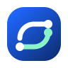
PhaseSpace UMNTracker hardware and setup
This is where your physical hardware becomes a usable tracked object. The LED layout, the session profile, and the exported JSON are all part of the same handoff from room setup into the ROS workflow.
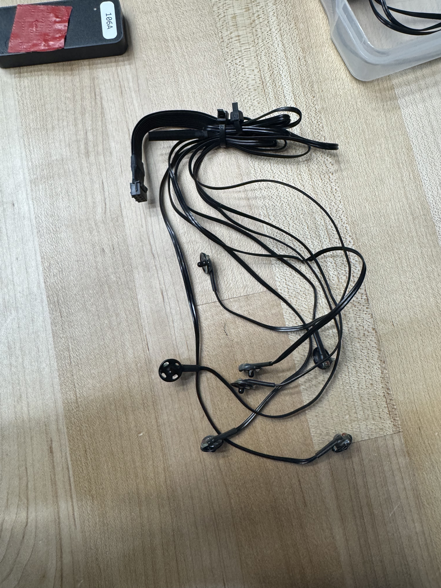
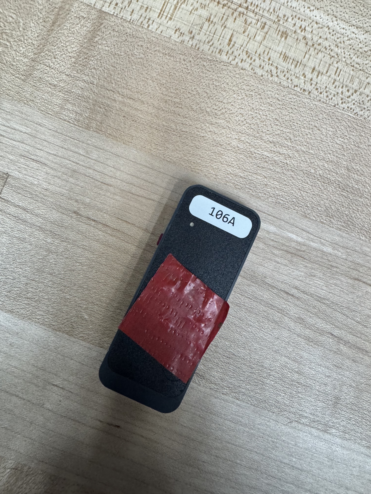
Tracker Hardware
The tracker is not just a name inside software. It is a physical object with a known LED arrangement that the system uses to estimate a rigid-body pose.
The visible LED layout is what gives PhaseSpace enough information to resolve the rigid body.
The session profile controls which hardware and LED groups are active in the current room setup.
The JSON file is the saved tracker definition that later gets loaded by the ROS node.
Part 1
If a device is greyed out, power it on and make sure the interface can see it.
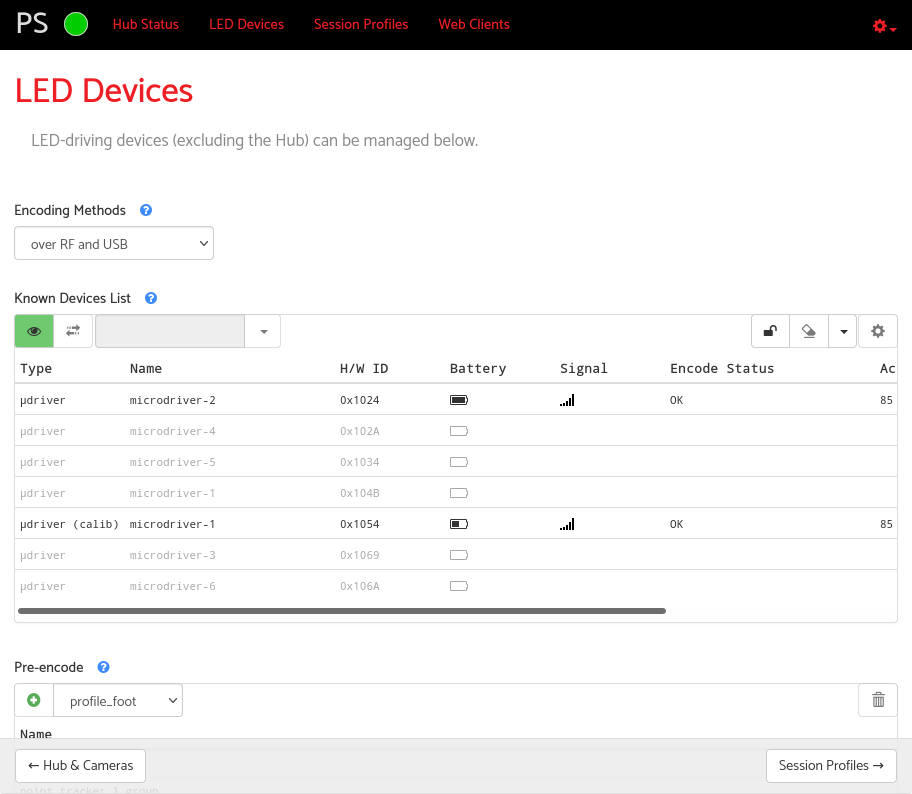
Open Session Profiles, click the plus button, and create a profile for your setup.
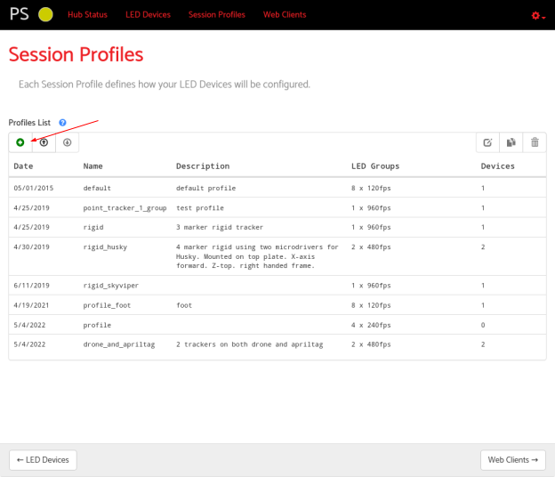
Use a name that will still make sense later when you have more than one tracked object.
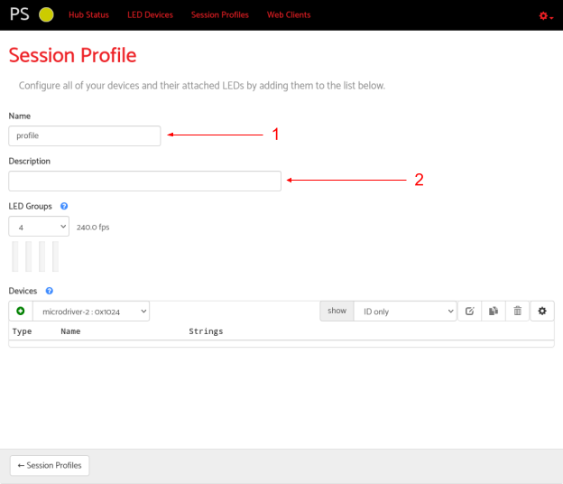
Group the LEDs so the system knows which visible points belong together for encoding.
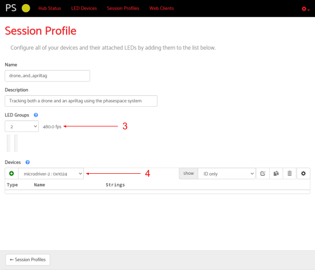
Pre-encoding is what prepares the system to identify the tracker consistently.
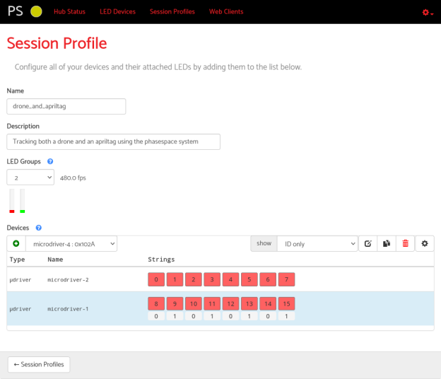
Once the profile shows up and is active, you have a live tracking setup ready for export.
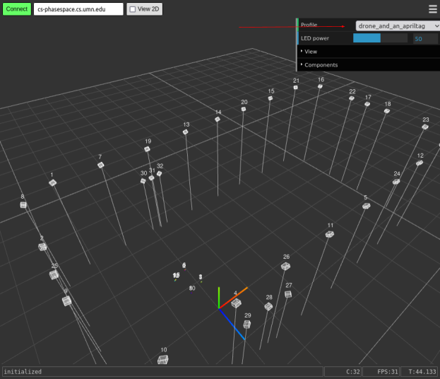
Part 2
The web interface helps manage active session profiles. Master Client is where you turn those visible markers into the rigid-body tracker definition saved as JSON.
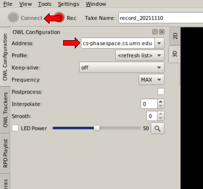
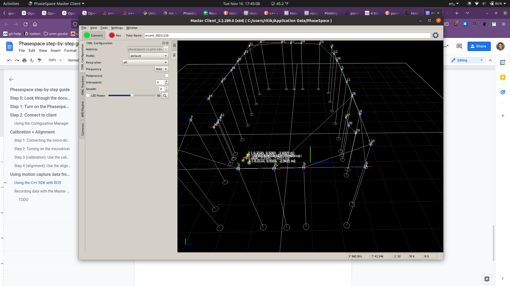
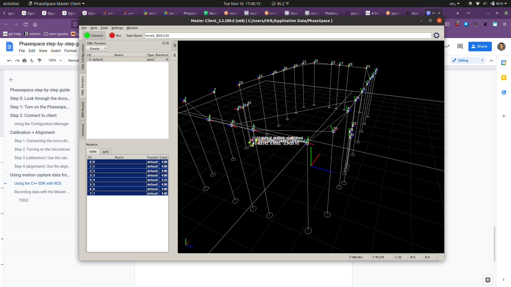
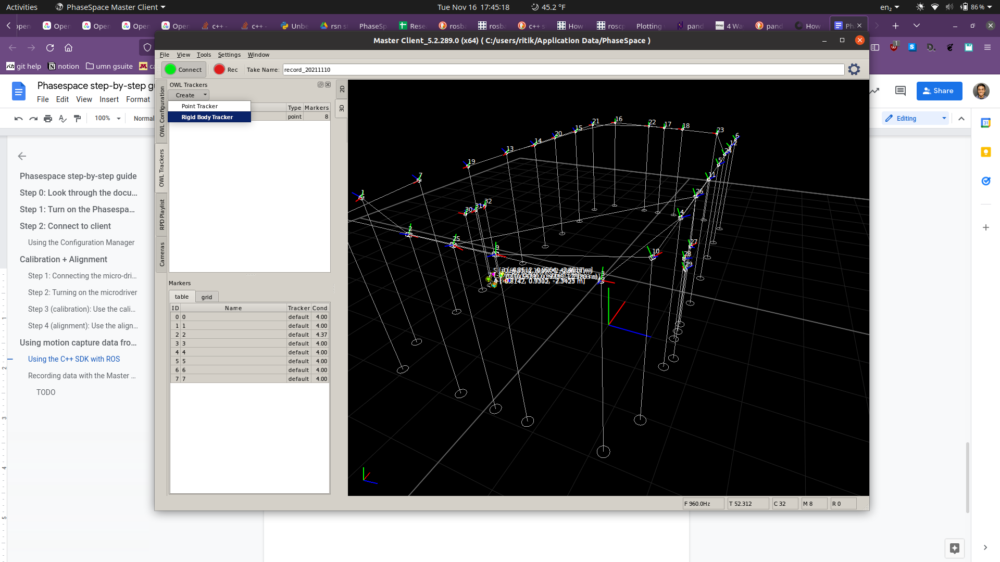
If the tracker JSON is wrong or missing, the ROS command might still run, but it will not know how to create the rigid body you actually care about.